mmap的使用及性能分析
更新日期:
###Page Cache###
Page cache是内核缓存文件内容的内存块，一般大小为4KB，可以通过sysconf(_SC_PAGE_SIZE)获取当前系统page cache大小。Page cache的引入解决了与文件操作先关的两个严重的问题：
- 跟内存相比磁盘的读写难以接受的缓慢
- 文件内容在进程间共享
我们以read系统调用为例来描述一个读操作的流程：
从文件data.dat的开头读取1KB数据
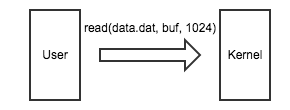
内核首先检查是否有命中的page cache，若果没有命中则分配一个page cache
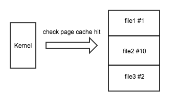
上图中“file1 #1”表示文件file1的索引为1的page cache
从磁盘读取包含所需数据的4KB数据存储到page cache中
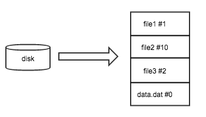
内核将page cache中用户所需的1KB数据拷贝到用户空间内存中
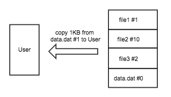
###mmap###
上节中通过系统调用read读取文件需要经过两次数据拷贝，一次从磁盘拷贝到page cache，一次从page cache拷贝到用户空间内存。使用本节介绍的内存映射技术可以免掉page cache到用户内存的拷贝。内存映射是一种将用户空间虚拟地址直接映射到page cache的技术。
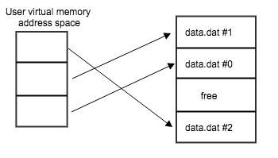
上图描述了文件data.dat的3个page cache在用户虚拟内存空间中的映射关系。当一个文件被映射到用户虚拟内存空间中时，文件内容并不会全部被加载到page cache中，而是通过缺页中断按需加载到内存中。
在类Unix系统中可以通过mmap系统调用来实现用户空间虚拟内存映射，mmap的函数定义为：
void* mmap(void* start, size_t len, int prot, int flags, int fd, off_t offset)
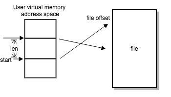
上图显示了start，len， offset这几个参数的意义，start只是一个建议并不能保证一定能映射到start开始的内存地址上，如果start为NULL，则不特别指定开始地址由内核决定。
参数port指定了映射内存区域的访问权限：
- PORT_READ：内存可读
- PORT_WRITE：内存可写
- PORT_EXEC：内存可执行
参数falgs指定了映射对象的类型以及以及是否能在进程间共享
- MAP_ANON映射没有关联的文件（匿名内存映射）
- MAP_FILE映射到文件
- MAP_SHARED共享映射
- MAP_PRIVATE私有映射，写时拷贝
更加详细的解释自行man mmap。
####mmap read####
int fd = open(file_path, O_RDONLY);
size_t size = lseek(fd, 0, SEEK_END);
lseek(fd, 0, SEEK_SET);
void* base = mmap(0, size, PROT_READ, MAP_SHARED, fd, 0)
####mmap write####
int fd = open(file_path, O_RDWR, 0644);
void* base = mmap(0, size, PROT_WRITE, MAP_SHARED, fd, 0)
####mmap exec####
下面演示在内存中动态创建函数并执行（在iOS系统无法执行）。addOne是我们想要动态创建的函数：
int addOne(int num)
{
return num + 1;
}
该函数包含在mexectest.c中，执行gcc -c mexectest.c生成mexectest.o。OSX系统使用otool，Linux系统使用objdump从.o文件中获取机器码。
otool -t mexectest.o
下图中红色框内的即是机器码
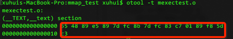
下面为动态创建函数并运行的部分代码，全部代码参考repo
void mmexec_test()
{
// 函数addOne机器码
char code[] = {
0x55, 0x48, 0x89, 0xe5, 0x89, 0x7d, 0xfc, 0x8b, 0x7d, 0xfc, 0x83, 0xc7, 0x01, 0x89, 0xf8, 0x5d, 0xc3
};
void* ptr = mmap(0, sizeof(code), PROT_READ | PROT_WRITE | PROT_EXEC, MAP_PRIVATE | MAP_ANONYMOUS, -1, 0);
if(ptr == MAP_FAILED) {
perror("mmap error");
return;
}
memcpy(ptr, code, sizeof(code));
typedef int (*TestFunc)(int);
TestFunc func = ptr;
int res = func(3);
printf("result: %d\n", res);
}
###mmap性能分析###
测试代买参见repo。
####写性能测试####
测试机为iPhone 6P，系统版本为9.3.2
写256MB数据使用System trace Profile得到的数据
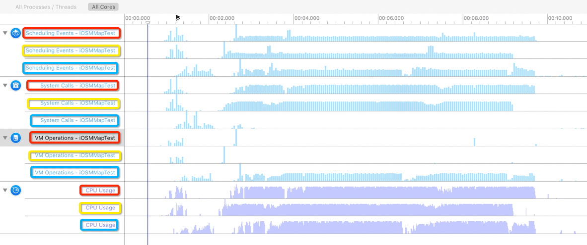
红色为使用fwrite的结果，黄色为使用write的结果，蓝色为使用mmap的结果，从时间上来说三种方法并没有明显的差距。可以看到write和fwrite有大量的系统调用，很少虚拟内存操作，而mmap则相反，有大量的虚拟内存操作，很少系统调用。
####读性能测试####
使用read系统调用读256MB数据
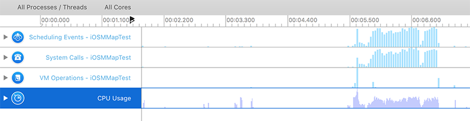
使用fread读256MB数据
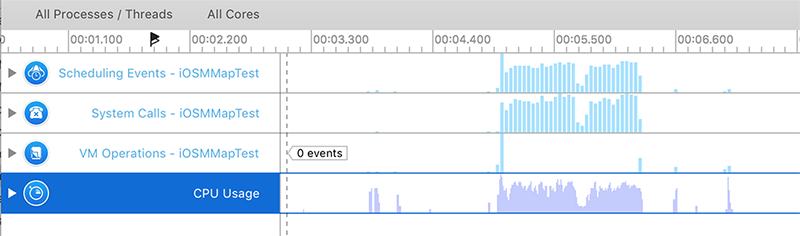
使用上面两种方式测试用时没有明显的差距。
使用mmap读取256MB数据
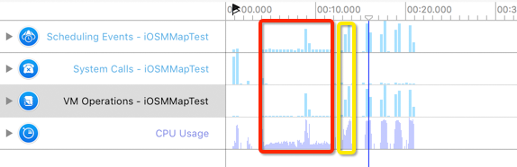
上图红色为第一次运行的结果，性能远远低于使用read和fread，从CPU Usage我们可以看到CPU的利用率很低。黄色为第二次运行的结果，时间大幅缩短，CPU利用率很高，跟read和fread相比有少许的性能提升。我们来看下图来找出原因：
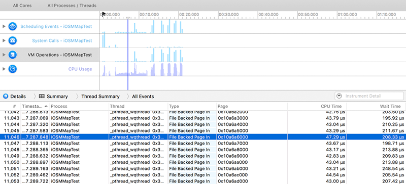
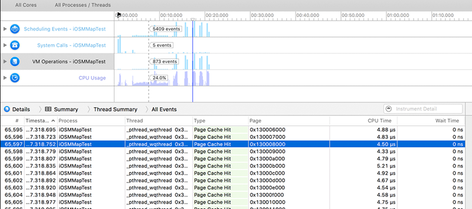
根据文档《Memory Usage Performance Guidelines》，当访问没有映射到虚拟内存地址上的物理内存上的数据时，会触发存储器访问中断（memory access fault），该中断有两种类型：
- 软中断，被访问的物理内存页在内核中存在，但是还没有被映射到进程虚拟地址空间中（对应于第一节中的Page Cache命中）
- 硬中断，内核中没有要访问的物理内存页，这时候会触发真正的缺页中断
第一张图中可知第一次运行是触发的都是硬中断，第二张图可知触发的都是软中断。
###结论###
在iOS系统上使用mmap并不会带来不可思议的性能提示，但是使用mmap能够一定程度上简化文件IO代码的编写，在iOS系统上还要注意内存映射是有大小限制的，一个文件描述符的映射大小不能超过800MB（具体多少没有仔细测试）。